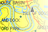
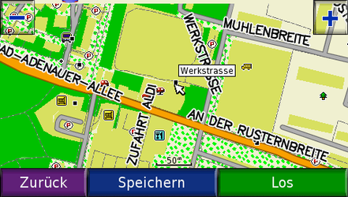
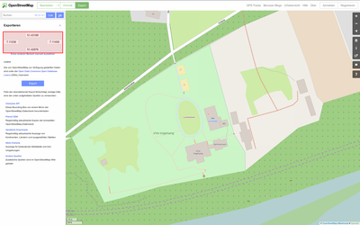

Mkgmap
Dieser Artikel wurde für die folgenden Ubuntu-Versionen getestet:
Ubuntu 16.04 Xenial Xerus
Ubuntu 14.04 Trusty Tahr
Zum Verständnis dieses Artikels sind folgende Seiten hilfreich:

Daten aus dem OpenStreetMap-Projekt (OSM) können für Navigationsgeräte der Firma Garmin  aufbereitet und konvertiert werden. Diverse Einstellungsmöglichkeiten gestatten die Generierung einer individuellen und tagesaktuellen Karte. Die erstellte Karte kann problemlos auf die Geräte übertragen werden.
aufbereitet und konvertiert werden. Diverse Einstellungsmöglichkeiten gestatten die Generierung einer individuellen und tagesaktuellen Karte. Die erstellte Karte kann problemlos auf die Geräte übertragen werden.
|  |
| Karte im Einsatz |
Voraussetzungen¶
Benötigt wird eine Java-Laufzeitumgebung (JRE).
Installation¶
Einige der benötigten Komponenten sind in den offiziellen Paketquellen zu finden. Andere (Zusatz-)Programme stehen nur über die jeweiligen Projektseiten zur Verfügung (siehe unten).
Aus den offiziellen Paketquellen werden die folgenden Pakete [1] benötigt:
lib32z1
unrar (multiverse)
zlib1g-dev
 mit apturl
mit apturl
Paketliste zum Kopieren:
sudo apt-get install lib32z1 unrar zlib1g-dev
sudo aptitude install lib32z1 unrar zlib1g-dev
Zusatzprogramme¶
Verzeichnis anlegen¶
Für die Installation der einzelnen Programmteile und für das Kartenmaterial wird der Ordner ~/OSM im Homeverzeichnis angelegt. Das Anlegen des Ordners kann entweder über den Dateimanager oder das Terminal [2] erfolgen:
mkdir ~/OSM
Mkgmap¶
Hinweis:
mkgmap ist zwar in den offiziellen Paketquellen vorhanden, aber diese Version ist veraltet und wird kaum gepflegt. Daher sollte man es manuell installieren.
Von der Projektseite 
 das Archiv mkgmap-VERSION.zip nach Downloads herunterladen und anschließend entpacken [3]. Die im neu entstandenen Ordner enthaltenen Elemente anschließend in das Installationsverzeichnis ~/OSM verschieben.
das Archiv mkgmap-VERSION.zip nach Downloads herunterladen und anschließend entpacken [3]. Die im neu entstandenen Ordner enthaltenen Elemente anschließend in das Installationsverzeichnis ~/OSM verschieben.
Splitter¶
Damit mkgmap richtig arbeiten kann, wird der Splitter benötigt. Diese Hilfsanwendung ermöglicht das Verarbeiten von Dateien, welche größer als 500 MB sind. Der Splitter teilt die großen Dateien im Arbeitsverzeichnis ~/OSM in kleinere einzelne Dateien auf. Diese Dateien werden dann später weiter verarbeitet.
Von der Projektseite mkgmap.org die aktuelle Version als .zip-Archiv nach Downloads herunterladen und entpacken [3]. Das Paket splitter.jar in das Installationsverzeichnis verschieben.
Osmconvert¶
Osmconvert kann zwischen verschiedenen OpenStreetMap-Formaten (.osm, .osc, .osc.gz, .osh, O5m, .o5c und PBF) umwandeln und diese verarbeiten. Es beinhaltet keine Datenbank und ist daher nicht ganz so schnell. Jedoch verfügt das Werkzeug über Spezialfunktionen.
Um dem Programm mkgmap Adressdaten zur Verfügung zu stellen, wird Osmconvert benötigt.
Zur Installation von Osmconvert die "Programmdatei für Linux 32 bit" wählen und nach Downloads herunterladen. Die Datei mit folgendem Befehl im Terminal umbenennen, ausführbar machen [4] und in das Installationsverzeichnis ~/OSM verschieben.
cd Downloads mv osmconvert32 osmconvert chmod a+x osmconvert mv osmconvert ~/OSM
Osmfilter¶
Osmfilter stellt die Datei mit Adressinformation boundaries.osm für mkgmap bereit.
Von Osmfilter die "Programmdatei für Linux 32 bit" auswählen und diese nach Downloads herunterladen. Die Datei im Terminal umbenennen und Ausführrechte setzen [4]. Anschließend in das Installationsverzeichnis ~/OSM verschieben:
cd Downloads mv osmfilter32 osmfilter chmod a+x osmfilter mv osmfilter ~/OSM
|  |
| Minikarte |
Kartenerstellung¶
Vor der Generierung einer Karte sollte man sich überlegen, welchem Zweck diese dienen soll. Eventuell reicht eine Minikarte zur Orientierung aus oder das Material soll einen Adressindex beinhalten. Abhängig von den gewünschten Erfordernissen kann die Generierung einer Karte einige Zeit in Anspruch nehmen. Dies ist abhängig von der gewählten Gebietsgröße und der verwendeten Hardware. Es sollte immer ausreichend Speicherplatz auf der Festplatte vorhanden sein, da schnell einige GB an Daten entstehen können.
Minikarte¶
Um für ein kleines Gebiet eine nicht routingfähige Minikarte zu erstellen, kann man über die Projektseite vom OSM die benötigten Daten herunterladen. Nachdem man die interessierende Gegend aufgerufen hat, gelangt man über die Schaltfläche "Export" zum gewünschten Menü. Hier über "Einen anderen Bereich manuell auswählen" den genauen Bereich definieren und über "Export" die gewünschte .osm-Datei herunterladen. Über JOSM kann man ebenfalls eine .osm-Datei erhalten. Hier den heruntergeladenen Bereich speichern.
Die Minikarte kann mit dem folgenden Befehl [2] generiert werden:
java -jar ~/OSM/mkgmap.jar --add-pois-to-areas --gmapsupp --description="Hello World!" map.osm
Wget¶
Zur Verwendung in einem Skript kann man die gewünschte Region mit wget herunterladen und in der passenden Datei speichern (hier: Linuxhotel.osm). Der Zugriff auf die OSM-Daten erfolgt über das Application Programming Interface (API) [2]:
wget -O MeineKarte.osm "http://api.openstreetmap.org/api/0.6/map?bbox=Links,Unten,Rechts,Oben" # Den Titel von MeineKarte.osm ggf. anpassen.
| OpenStreetMap API | |
| Parameter | Koordinate |
| Links | 7.11036 |
| Unten | 51.42991 |
| Rechts | 7.11458 |
| Oben | 51.43153 |
Die Koordinaten können über OSM ermittelt werden. Die Variablen Kantenlänge links (minLon), Kantenbreite unten (minLat), Kantenlänge rechts (maxLon) und Kantenbreite oben (maxLat) ergeben den folgenden Link [2]:
wget -O Linuxhotel.osm "http://api.openstreetmap.org/api/0.6/map?bbox=7.11036,51.42991,7.11458,51.43153"
Hinweis:
Es erscheint eine Fehlermeldung, wenn das ausgewählte Gebiet zu groß ist. Dieses darf nicht größer als circa 50km² sein und muss weniger als 50000 Knoten enthalten (s. Einschränkungen ).
Gebietskarten¶
Das Ausgangsmaterial für die gewünschte Region kann man von der Geofabrik GmbH oder einer anderen Quelle nach Downloads herunterladen und mit folgendem Befehl in das Installationsverzeichnis verschieben.
cd Downloads mv germany-latest.osm.pbf ~/OSM
Das folgende Beispiel geht von Deutschland aus. Die gewünschte Datei liegt als germany-latest.osm.pbf auf der Seite vor. Es kann jede andere Region der Welt genutzt werden - man muss lediglich die in diesem Beispiel genannten Befehle entsprechend abändern.
Hinweis:
Bei der Kartenerstellung ist die Kartengröße zu beachten. Ältere Geräte können nur maximal 1,99 GB und neuere Geräte bis zu 3,99 GB verarbeiten. Bei einigen Geräten erlaubt ein Firmwareupdate die Verwendung von Kartendaten, welche die Dateigröße von 2GB überschreiten.
Kartenmaterial aufteilen¶
Zum Verarbeiten darf das vorliegende Kartenmaterial nicht größer als 500 MB sein. Sofern dies der Fall sein sollte, wird es mit dem Splitter entsprechend aufgeteilt. Hierzu ist für das genannte Beispiel folgender Befehl nötig [2] [6], welcher in dem Verzeichnis mit dem Basismaterial ausgeführt wird:
java -jar ~/OSM/splitter.jar --output=xml --output-dir=pbf germany-latest.osm.pbf java -Xmx700M -jar ~/OSM/splitter.jar --output=xml --output-dir=pbf germany-latest.osm.pbf # Bei weniger als 2GB Arbeitsspeicher
Im Arbeitsverzeichnis ~/OSM/pbf werden nun eine Reihe von .pbf-Dateien erstellt und mittels mgkmap weiterverarbeitet. Diese Dateien sind nicht zur direkten Nutzung gedacht.
Achtung!
Ein Öffnen der .pbf-Dateien kann die zu erstellende Karte beschädigen.
Diese Befehle können auch in das obige Skript aufgenommen werden. Hier muss jedoch darauf geachtet werden, dass gmasupp.img vorher verschoben wird.
Adressindex¶
Für die Adresssuche in Garmin-Geräten muss der Adressindex vorbereitet werden. Hier kann entweder ein fertiges Archiv zum Einsatz kommen oder osmconvert verwendet werden.
Archiv¶
Die aktuellen Daten können als fertiges Archiv (bounds_DATUM.zip) von mkgmap.org.uk oder thkukuk.de bezogen werden. Dieses entpacken [3] und den Ordner anschließend in bounds umbenennen. Der neue Ordner wird in das Arbeitsverzeichnis ~/OSM verschoben.
Osmconvert¶
Um den Ordner bounds mittels osmconvert zu erstellen sind die folgenden Befehle [2] notwendig:
~/OSM/osmconvert germany-latest.osm.pbf --out-o5m >germany.o5m # germany.o5m wird erstellt ~/OSM/osmfilter germany.o5m --keep-nodes= --keep-ways-relations="boundary=administrative =postal_code postal_code=">germany-boundaries.osm # germany-boundaries.osm wird erstellt java -cp ~/OSM/mkgmap.jar uk.me.parabola.mkgmap.reader.osm.boundary.BoundaryPreprocessor germany-boundaries.osm bounds # Dieser erstellt das Verzeichnis bounds mit den darin enthaltenen Grenzdateien, Städten, Straßen und Hausnummern.
Kartenerstellung¶
Nachdem das Splitten beendet ist und das Verzeichnis bounds im Arbeitsverzeichnis ~/OSM liegt wird der Prozess für die Kartenerstellung eingeleitet.
Hierzu ist folgender Befehl [2] nötig.
java -Xmx2000m -jar ~/OSM/mkgmap.jar --remove-short-arcs --name-tag-list=name,name:de,int_name --preserve-element-order --housenumbers --bounds=bounds --index --levels=0:24,1:22,2:21,3:19,4:18,5:16 --route --code-page=1250 --add-pois-to-lines --add-pois-to-areas --location-autofill=is_in,nearest --gmapsupp --tdbfile --family-id=1 --product-id=73 --net -c pbf/template.args --mapname=uus --family-name="uus" --description="Hello World!"
Hinweis:
Je nach verwendeter Hardware kann die Erstellung einer Karte etwas mehr Zeit in Anspruch nehmen.
Befehlsoptionen¶
Einige Befehlsoptionen für die Kartenerstellung.
| mkgmap | |
| Parameter | Beschreibung |
--family-name=DEU-Date-`date +%Y-%m-%d` | Ausgabe des Kartennamens mit aktuellem Datums im Format: DEU-Date-JJJJ-MM-TT |
--family-name=DEU-Date-`date +%Y-%m-%d-%k-%M` | Ausgabe des Kartennamens mit aktuellem Datums im Format: DEU-Date-JJJJ-MM-TT-h:min |
--add-pois-to-areas | Zeigt die Fläche als Icon im Display |
--family-name= | Kartenname, welcher im Navigationsgerät angezeigt wird |
--family-id | ID muss identisch der im TYP-File angegebenen Family-ID sein |
--generate-sea | Meeresdarstellung |
--gmapsupp | Erzeugt die gmapsupp.img für Geräte des Herstellers Garmin |
--housenumbers | Verbessert die Funktion, Suche und Anzeige der Hausnummern |
--latin1 | Zeichensatz |
--mapname=63240901 | Alternativer Kartenname |
--remove-short-arcs | Ungenauigkeiten der GPS-Koordinaten beeinflussen das Routing nicht |
--route | Routinginformationen bereitstellen |
--style-file=mystyle10.zip | Einen eigenen Kartenstil verwenden. |
--tdbfile | Erzeugt .img Dateien für z.B. QLandkarteGT |
--help | Hilfe |
Eine Vielzahl weiterer Möglichkeiten kann der Dokumentation entnommen werden.
Die so generierte Karte gmapsupp.img ist in den Ordner Garmin auf der Speicherkarte des Geräts zu kopieren. Details zur maximalen nutzbaren Dateigröße und dem verwendbaren Dateisystem sind der offiziellen Dokumentation der Herstellerseite zu entnehmen. Alternativ findet man zu einigen Geräten Informationen im Wiki von OpenStreetMap. Einige Geräte bieten nach einer Aktualisierung der Gerätesoftware zusätzliche Funktionen. Im Handbuch des Geräts findet man Informationen zur Aktivierung einer Karte. Einige Geräte unterstützen die Darstellung mehrerer Karten während ältere Geräte dies nicht vermögen.
Kartenupdate¶
Ein Navigationsgerät ist nur so gut wie das Alter des Kartenmaterials, daher sollte die Karte regelmäßig erneuert werden. Für ein Update einer Karte wird Osmupdate benötigt. Das Programm lädt die geänderten Daten herunter und verbindet diese mit den bereits vorhandenen Daten auf dem Computer.
Osmupdate¶
Zur Installation von Osmupdate den Download "Programmdatei für Linux 32 bit" wählen, nach Downloads herunterladen, umbenennen und in das Installationsverzeichnis verschieben [2]:
cd Downloads mv osmupdate32 osmupdate chmod a+x osmupdate mv osmupdate ~/OSM
Hinweis:
Die gesamte Prozedur eines Kartenupdates kann mit einem Skript automatisiert gestartet werden.
Update¶
Schritt 1¶
Um eine neue Karte zu erhalten, zuerst die alten Daten (falls noch vorhanden) mit folgendem Befehl [2] löschen:
cd OSM/Mkgmap rm -f *.osm.gz* rm -f *.args* rm -f areas.list areas.poly densities-out.txt rm -f *.img* rm -f *.tdb* rm -f *.mdx* cd
Schritt 2¶
Die vorhandene alte germany-latest.osm.pbf aus dem Ordner ~/OSM, in germany-latest-old.osm.pbf mit folgendem Befehl [2] umbenennen:
cd OSM mv germany-latest.osm.pbf germany-latest-old.osm.pbf
Schritt 3¶
Nun das Update der vorhandenen Datei germany-latest-old.osm.pbf mit folgendem Befehl starten.
cd OSM/Mkgmap ~/OSM/osmupdate germany-latest-old.osm.pbf --minutely --hour --day --keep-tempfiles germany-latest.osm.pbf
Im Arbeitsverzeichnis ~/OSM wird nun begonnen, die vorhandenen alten Daten zu prüfen und neuere Daten einzupflegen. Nach Beendigung des Updates ist eine aktuelle Datei germany-latest.osm.pbf vorhanden. Je aktueller das vorleigende Kartenmaterial ist, desto kürzer dauert das Update.
Nach dem Update der Datei germany-latest.osm.pbf kann mit den im Abschnitt Kartenmaterial vorbereiten beschriebenen Schritten wieder eine neue aktuelle Karte erstellt werden.
Skripte¶
Die Skripte im Homeverzeichnis abspeichern und anschließend Ausführrechte [4] setzen. Die Region und eventuelle Optionen definieren. Hier kann eine farblich markierte Textdatei Kartenerstellung.odt heruntergeladen werden. Diese hilft bei der Änderung der entsprechenden Zeilen, falls eine Karte einer anderen Region erstellt werden soll. Über das Terminal kann das jeweilige Skript anschließend aufgerufen [2] werden. Der Aufruf für die Generierung der Karte sieht z.B. wie folgt aus:
./Karte.sh
Sollte ein Fehler auftreten oder ein Dateiname nicht stimmen bricht die Erstellung automatisch ab.
Karte.sh¶
1 2 3 4 5 6 7 8 9 10 11 12 13 14 15 16 17 | #!/bin/sh -e set -e cd OSM ./osmconvert germany-latest.osm.pbf --out-o5m >germany-latest.o5m cd cd OSM ./osmfilter germany-latest.o5m --keep-nodes= --keep-ways-relations="boundary=administrative =postal_code postal_code=">germany-latest-boundaries.osm cd cd OSM java -cp mkgmap.jar uk.me.parabola.mkgmap.reader.osm.boundary.BoundaryPreprocessor germany-latest-boundaries.osm bounds cd cd OSM java -jar splitter.jar --output=xml germany-latest.o5m cd cd OSM java -jar mkgmap.jar --remove-short-arcs --name-tag-list=name,name:de,int_name --preserve-element-order --housenumbers --bounds=bounds --index --levels=0:24,1:22,2:21,3:19,4:18,5:16 --route --code-page=1250 --add-pois-to-lines --add-pois-to-areas --location-autofill=is_in,nearest --tdbfile --family-id=1 --product-id=41 --description=DEU --gmapsupp --family-name=Deutschland-Date-`date +%Y-%m-%d-%k-%M` --net -c template.args cd |
Nach der Erstellung der Karte und der Sicherung der Datei gmapsupp.img sollte das Installationsverzeichnis mit den folgenden Befehlen [2] bereinigt werden, somit kann die Karte problemlos ein Update erfahren:
cd OSM sleep 60 rm -r bounds osmupdate_temp rm -f *.osm.pbf* rm -f *.osm.gz rm -f *boundaries.osm* rm -f *.args* rm -f areas.list areas.poly densities-out.txt xlkw.TYP mv germany-latest.o5m germany-latest-old.o5m rm -f *.img* rm -f *.tdb* rm -f *.mdx* cd
Kartenupdate.sh¶
1 2 3 4 5 6 7 8 9 10 11 12 13 14 15 16 17 | #!/bin/sh -e set -e cd OSM ./osmupdate germany-latest-old.o5m --minutely --hour --day --keep-tempfiles germany-latest.o5m cd cd OSM ./osmfilter germany-latest.o5m --keep-nodes= --keep-ways-relations="boundary=administrative =postal_code postal_code=">germany-latest-boundaries.osm cd cd OSM java -cp mkgmap.jar uk.me.parabola.mkgmap.reader.osm.boundary.BoundaryPreprocessor germany-latest-boundaries.osm bounds cd cd OSM java -jar splitter.jar --output=xml germany-latest.o5m cd cd OSM java -jar mkgmap.jar --remove-short-arcs --name-tag-list=name,name:de,int_name --preserve-element-order --housenumbers --bounds=bounds --index --levels=0:24,1:22,2:21,3:19,4:18,5:16 --route --code-page=1250 --add-pois-to-lines --add-pois-to-areas --location-autofill=is_in,nearest --tdbfile --family-id=1 --product-id=41 --description=DEU --gmapsupp --family-name=Deutschland-Date-`date +%Y-%m-%d-%k-%M` --net -c template.args cd |
Am Ende des Updates befindet sich im Installationsverzeichnis die aktuelle neue Datei gmapsupp.img. Nach der Erstellung der Karte und der Sicherung der Datei gmapsupp.img sollte das Installationsverzeichnis mit folgenden Befehlen [2] bereinigt werden:
cd OSM rm -r bounds osmupdate_temp rm -f *.osm.gz rm -f *boundaries.osm* rm -f *.args* rm -f areas.list areas.poly densities-out.txt xlkw.TYP mv germany-latest.o5m germany-latest-old.o5m rm -f *.img* rm -f *.tdb* rm -f *.mdx* cd
Somit kann die Karte einfach wieder ein Update erfahren.
Links¶
Openstreetmap-Daten auf GPS-Geräten von Garmin
- Linux-Magazin, 06/2010MotoRoute Tourer-Karte
- Linux: MRTK_1.4.78.zipBlitzer-Overlay für Garmin-Navis
- Die Verwendung solcher Warnhinweise im Straßenverkehr ist in verschiedenen Ländern verboten! Bitte die rechtlichen Bestimmungen beachten!
- Erstellt mit Inyoka
-
 2004 – 2017 ubuntuusers.de • Einige Rechte vorbehalten
2004 – 2017 ubuntuusers.de • Einige Rechte vorbehalten
Lizenz • Kontakt • Datenschutz • Impressum • Serverstatus -
Serverhousing gespendet von